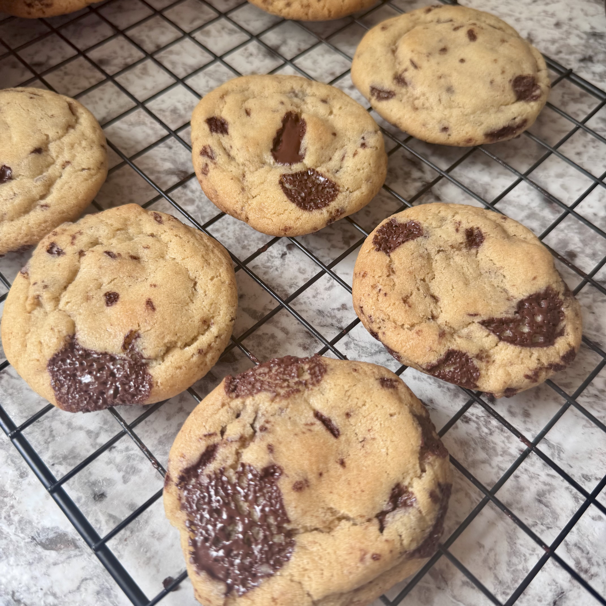

This is a standard chocolate chunk cookie recipe that turns out cookies with perfect crisp edges and a soft and chewy interior. This recipe calls for a chocolate bar instead of chocolate chips, however you may use chips if you wish, you'll need at least 1 cup of chocolate chips to substitute. You may substitute butter in this recipe for avocado oil if you want dairy free cookies. Substituting for avocado oil will turn out a slightly crispier/drier cookie but the texture will stay relatively the same and the flavor is just slightly less rich. Be mindful that your cookies will cook slightly faster if you plan on using avocado oil. If you're wanting to make dairy free cookies also be sure to check that the chocolate used does not contain dairy. This recipe calls for dark chocolate but you may use any chocolate you wish. This recipe makes two dozen cookies and takes about an hour to make.
There are hundreds of variations of the chocolate chip cookie on the internet, so why make my own recipe? I was inspired to make my own cookie recipe after trying dozens of recipes online that just didnt get that perfect texture combination of crisp edges and chewy centers. I researched a ton on the differences of ingredients and how they affect a finished cookie, like how a high fat to flour ratio can turn out a crispy cookie instead of a soft and chewy cookie. Many cookie recipes require you to refridgerate your cookie dough before baking, but who really does that!! This recipe does not require you to refridgerate the dough before hand so you can bake them as soon as you finish mixing in your chocolate chunks. p.s. you can refridgerate the dough if you're not ready to make your cookies yet, it will not affect how the cookies will turn out but the dough will be very hard and difficult to shape into balls for baking so you may need to let the dough sit and soften.
These cookies are absolutely delicious and I hope you enjoy making them and eating them!!